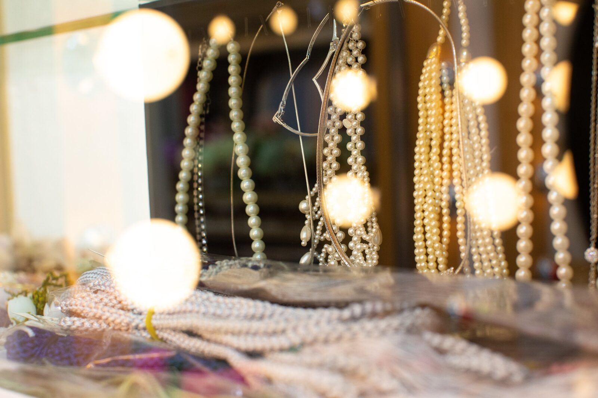
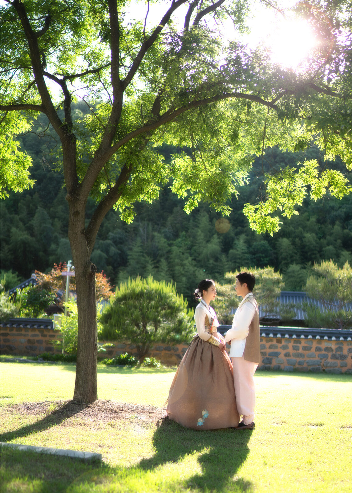

창원 세미 가족사진 — 정장 한 벌이 가족을 한 편의 그림으로 만듭니다
2026-10-18 발행
창원 세미 가족사진을 찾으시는 분들은 대개 이런 말씀을 하십니다. "이번에는 제대로 남기고 싶어요." 세미 정장 가족사진은 그 마음에 맞는 촬영입니다.
사랑이야기 스튜디오 창원점은 경남 창원시 성산구 원이대로 652, 상남동 롯데빌딩 2층에 있습니다. 세미 촬영은 캐주얼보다 한 단계 정돈된 자리입니다. 아버지는 재킷을 입으시고, 어머니는 드레스를 입으십니다. 옷이 바뀌면 자세가 바뀌고, 자세가 바뀌면 표정이 달라집니다.
세미 가족사진은 어떤 날에 어울릴까요? 부모님의 칠순·팔순을 앞두고 온 가족이 모이는 날, 자녀가 성인이 되어 가족이 다시 한자리에 서는 날, 오래 미뤄 둔 가족사진을 이번에는 제대로 남기려는 날입니다. 이런 날은 한 번 지나가면 다시 오지 않습니다.

옷은 의상실에서 함께 고릅니다. 여성은 드레스나 이브닝 원피스, 남성은 정장 재킷과 셔츠를 기본으로 하고, 아이들은 어른 옷의 색에 맞춰 준비합니다. 목걸이와 귀걸이 같은 액세서리도 함께 준비되어 있어, 작은 소품 하나로 사진의 분위기가 달라집니다.
촬영은 밝은 배경에서 시작해 가족이 자연스럽게 웃는 순간을 담습니다. 정장을 입으면 처음에는 다들 조금 굳습니다. 그럴 때 저는 "아버지, 어머니 쪽으로 반 걸음만 옮겨 보세요"라고 말씀드립니다. 그러면 가족이 서로를 보게 되고, 그 순간 표정이 살아납니다. 이 한 걸음이 세미 가족사진의 핵심입니다.
세미 촬영은 사진 한 장의 완성도가 다릅니다. 그래서 촬영이 끝난 뒤 액자까지 함께 준비하시는 분이 많습니다. 저희는 수입 원목으로 고급 액자를 직접 만들기 때문에, 사진과 나무를 함께 보고 고르실 수 있습니다. 거실에 오래 걸려 있을 사진이라면 나무 색까지 신경 쓰는 것이 좋습니다.

사진을 남기는 일은 결국 시간을 붙잡는 일입니다. 세미 가족사진은 그중에서도 가장 단정하게 붙잡는 방법입니다.

자주 묻는 질문
Q. 창원에서 세미 가족사진을 찍으려면 옷을 따로 준비해야 하나요?
A. 아닙니다. 의상실에 드레스·정장·액세서리가 준비되어 있어 빈손으로 오셔도 됩니다. 다만 개인적으로 의미 있는 옷이 있다면 가져오셔도 좋습니다.
Q. 부모님이 정장을 불편해하시는데 괜찮을까요?
A. 괜찮습니다. 촬영 전 김스카페에서 커피 한 잔으로 쉬시고, 준비되면 시작합니다. 재킷은 촬영 중간에 벗으셔도 됩니다.
Q. 촬영 시간은 얼마나 걸리나요?
A. 준비와 촬영을 포함한 전체 시간은 예약 상황에 따라 달라집니다. 정확한 시간은 전화로 문의해 주시면 안내해 드립니다.

오시는 곳
사랑이야기창원점
- 주소 경남 창원시 성산구 원이대로 652, 상남동 롯데빌딩 2층
- 전화 055-287-8022
- 영업시간 오전 10:00 ~ 오후 7:00
- 예약 전화 상담 · 카카오톡 채널
- 주차 건물 지하 주차장
김작가사진이야기 의령
- 주소 경남 의령군 궁류면 청정로 1188
- 전화 055-574-3706
- 영업시간 오전 10:00 ~ 오후 7:00
- 예약 전화 상담 · 카카오톡 채널
- 주차 전용 주차장
이 글에 한마디
댓글창을 준비하고 있습니다. 그동안 궁금한 점은 카카오채널로 남겨 주시면 바로 답변드립니다.
카카오채널로 한마디 남기기